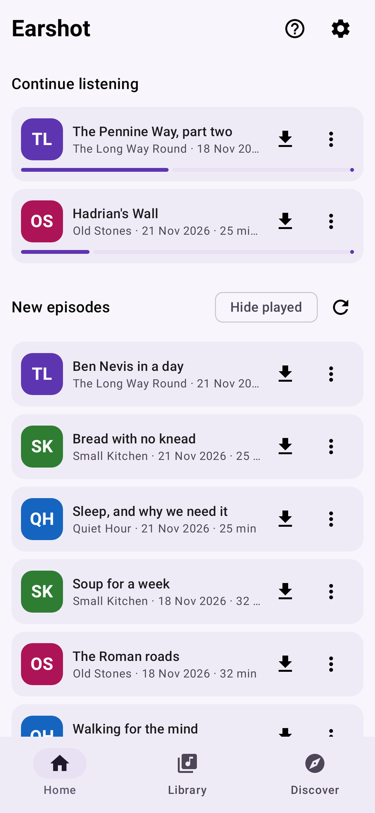
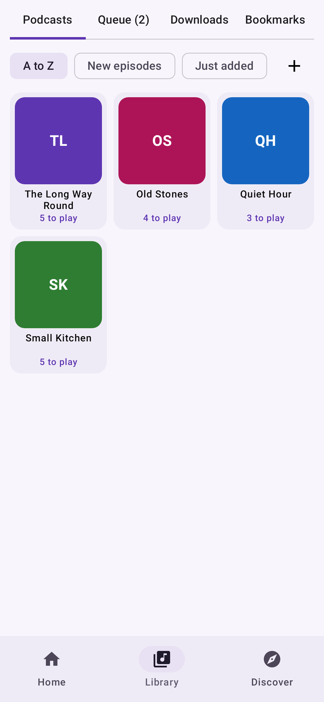
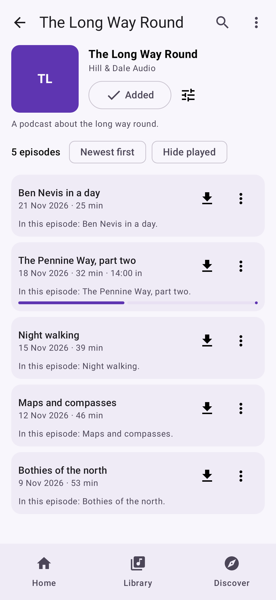
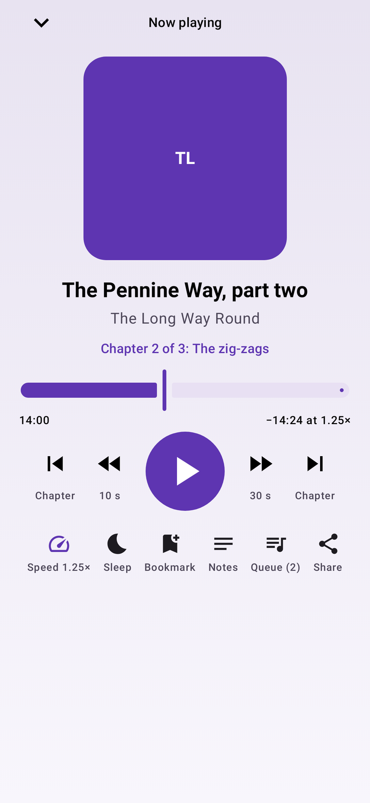
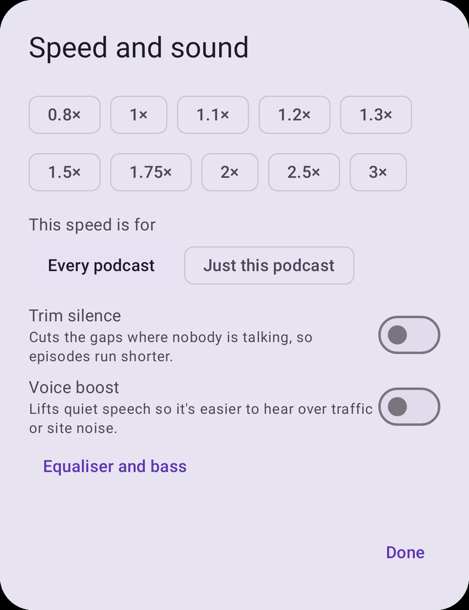
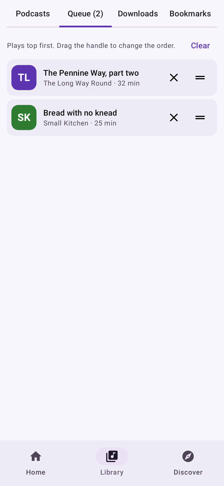
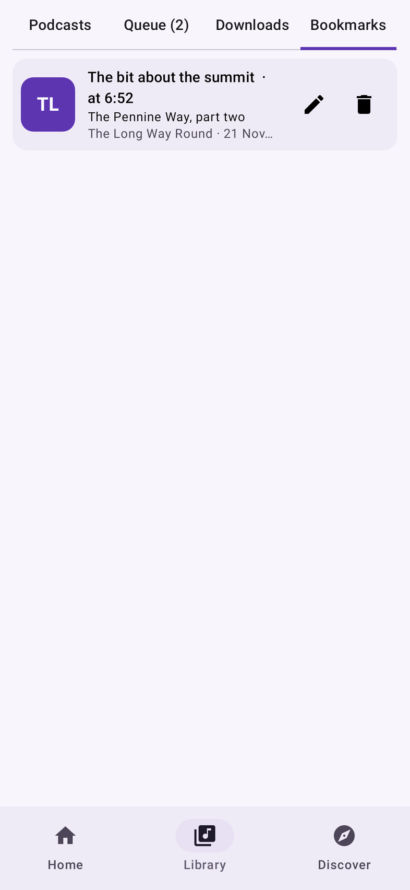
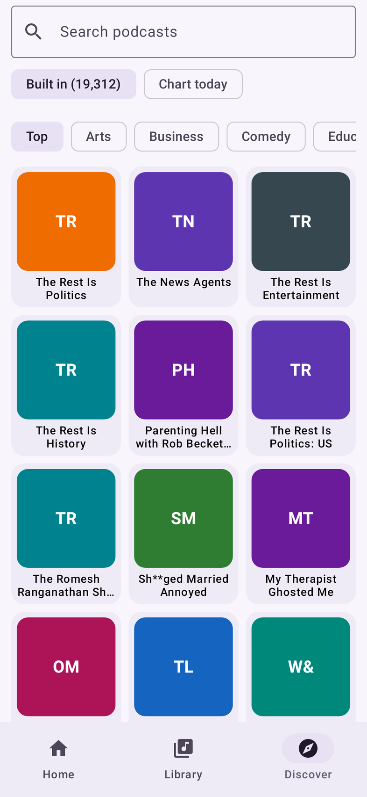

A podcast app with thousands built in.
Earshot is an Android app for podcasts. Over 19,000 come inside it, sorted into 111 lists by category, so there is something to listen to the moment you open it. If the one you want is not there, search for it or add it by its link.
It is free, with no adverts in the app, no account and nothing to unlock. Set a speed for each show, skip the parts you always skip, keep bookmarks, and let downloads tidy themselves.
Download for AndroidHow to install
- Version 1.0
- Android 8 or later
- 7 MB
Free, with nothing to unlock. No adverts, no account with the developer, no tracking. Compare or read the release notes.
Chrome may say the file might be harmful. It shows this for app files that do not come from Google Play. Choose Download anyway.

- No subscriptionEvery feature is in the free app.
- No advertsNone in the app and none on this site.
- No accountYour podcasts stay on your phone.
- 19,000 built inSomething to play straight away.
A look inside
These are the real screens, drawn from the app's own code with made-up podcasts. The Discover list is the one built into the app. Swipe or scroll sideways to see them all.







How it works
A podcast app should get you listening quickly and then stay out of the way.
Find a podcast
Browse the built-in lists, today's chart for your country, or search. Or paste a link.
Add it
Tap Add to My podcasts. New episodes appear on Home, and can download on Wi-Fi by themselves.
Listen your way
Set a speed for each show, skip the intro, bookmark a moment, and let played downloads clear themselves.
Everything is in, and all of it is free
Nothing below is held back for a paid tier, because there is no paid tier.
Finding
- Over 19,000 built in
- Sorted into 111 lists by category, ready the moment you open the app.
- Today's chart
- The top podcasts in your country, or another country's.
- Search and links
- Search a public directory, paste a feed link, or bring a whole list over from a file.
Listening
- A speed for each show
- Or one for every podcast, with trim silence and voice boost.
- Skip the start
- Skip the same intro on every episode of a show.
- Chapters and show notes
- Chapters worked out from the timestamps in the notes, with links you can tap.
- Sleep timer, bookmarks and a queue
- Stop at the end of an episode, mark a moment with a note, and line up what is next.
Tidy
- Downloads that look after themselves
- On Wi-Fi only if you like, a set number kept for each show, and played ones cleared.
- Android Auto
- Your podcasts and queue in the car.
- Backup
- Everything in one file, and moving over from Airwave.
Your listening is your business
No servers
Earshot has no accounts and no servers. The developer receives nothing from the app.
Straight to the podcast
Episodes come straight from each podcast's own feed.
No ads, no tracking
There is no advertising, analytics or tracking in the app or on this site. Some podcasts carry their own adverts.
Installing and updating
Earshot is not on Google Play, so your phone asks a couple of extra questions the first time.
Download the app file
Tap Download on your phone. The file is called Earshot.apk and is about 7 MB. If Chrome says the file might be harmful, choose Download anyway.
Allow the install
Open the file. The first time, Android asks you to allow your browser to install apps. Allow it, go back and tap Install. If Google Play Protect steps in, choose More details, then Install anyway.
Updating later
Earshot tells you when a newer version is out. Install the new file over the old one and everything you have saved is kept.
Version 1.0, released 18 November 2026. See the release notes, or check your download.
Questions
Is Earshot really free?
Yes. There is no paid version, no subscription and no adverts in the app, and nothing in it is locked away. Podcasts may still carry their own adverts, as they do in any podcast app.
Is Earshot on Google Play?
No. Earshot is a personal project and is downloaded from this site as an Android app file. It needs Android 8 or later.
How do I add a podcast?
Open Discover and tap one of the built-in podcasts, or type a name into the search box. Tap Add to My podcasts on its page. To add one by link, go to Library, Podcasts and tap +, then paste the podcast's feed link or the address of its page on Apple Podcasts.
How do I bring my podcasts over from another app?
In the other app, look in its settings for Export, or Export subscriptions, and save the OPML file it makes. In Earshot go to Library, Podcasts, tap + and then Choose a file. From Airwave, choose its backup file instead, which is in the phone's Documents folder under Airwave; your place in each episode comes across as well.
Why will an episode not play?
Check your internet first. Some podcasts take old episodes down, so try another one. If you downloaded the episode, delete the download and download it again. If a whole podcast will not load, it may have moved: search for it by name and add it again.
Why did a download disappear?
Earshot deletes a download a day after you finish the episode, and keeps only the newest five downloads for each podcast, so that the phone does not fill up. Change either rule, or switch it off, under Settings, Downloads. An episode that is in your queue or part-way through is never removed by the second rule.
Can each podcast have its own speed?
Yes. On the player tap Speed, pick a speed, then choose Just this podcast. That podcast keeps its speed and everything else follows the speed for every podcast. This works for podcasts you have added.
How do I skip the adverts at the start?
Open the podcast's page, tap the sliders button beside Added, and choose how many seconds to skip at the start and at the end of each episode. Earshot skips by the clock, so it suits a podcast that opens the same way every time. It cannot find adverts in the middle of an episode.
How much mobile data does a podcast use?
Most podcasts use about 30 to 60 MB an hour. Downloads wait for Wi-Fi unless you change that in Settings, and a downloaded episode uses no data when you play it.
How do I get Earshot on Android Auto?
Android Auto hides apps that were not installed from Google Play until you allow them. On the phone open Android Auto's settings, scroll to the bottom, tap Version ten times to switch on developer settings, then open the menu, choose Developer settings and tick Unknown sources.
How do I move to a new phone?
In Settings choose Save a backup file. It holds your podcasts, your place in each episode, the queue, your bookmarks and your settings. Copy the file to the new phone, install Earshot and choose Restore from a file. Downloaded episodes are not in the backup.
How do I update Earshot?
Earshot looks at its download page about twice a day and shows a notice on the Home tab and in Settings when a newer version is there. Download it and install it over the one you have. Your podcasts, places and settings are kept.
Something good to listen to, straight away
Free, with no adverts and nothing to unlock. Made by the developer of several other free Android apps: see them all.